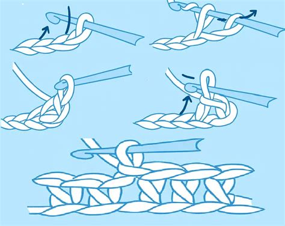
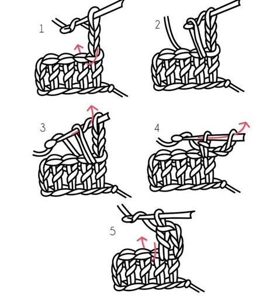
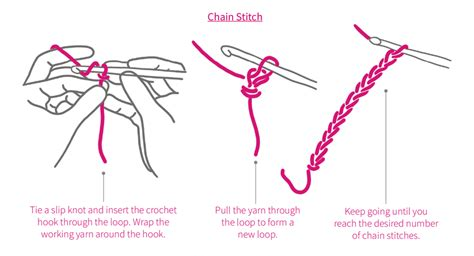
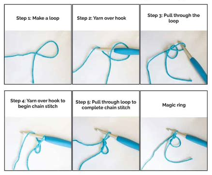
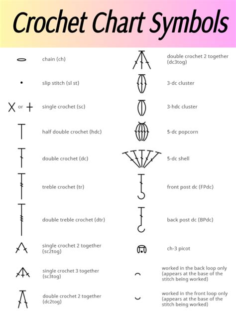

The basics comes down to the stitches and abbreviations for the specific pattern. For this would be the Dragon pattern. This is written in US terms and can be confusing if you only know the UK terms.
A single crochet is done by going into the next loop, pull the working yarn through. This makes a second loop on the hook. Then pull the working yarn through both loops. Leaving one loop on the hook.


Tie a slip knot and insert the hook through the loop. Wrap the working yarn around the hook. Pull the yarn through the loop to form a new loop. Keep going until you reach the desired number of chain stitches.

A magic circle (also called a magic ring) is a crochet technique used to start projects worked in the round, such as amigurumi, hats, or granny squares. It creates a tight, adjustable loop that can be pulled closed after the first round, leaving no visible gap at the center.

| US Terms: | UK Terms: |
|---|---|
| Slip stitch (sl st) | Slip stitch (ss) |
| Magic Circle/Ring (mc / mr) | Magic Circle/Ring (mc / mr) |
| Single Crochet (sc) | Double Crochet (dc) |
| Half Double Crochet (hdc) | Half Treble (htr) |
| Double Crochet (dc) | Treble (tc) |
| Treble (tr) | Double Treble (dtr) |
| Double Treble (dtr) | Triple Treble (trtr) |
Once you master the basics, something like this won't look as terrifing.
Symbols are used for patterns that use diagrams to visibly show how the pattern is crcheted.
